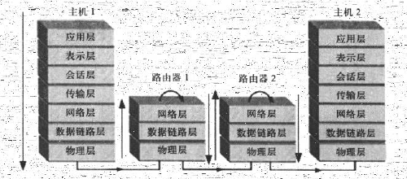
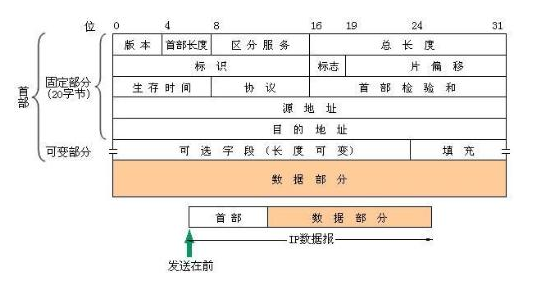
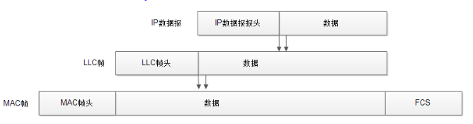

网络层
网络层介于传输层和数据链路层之间，其主要作用是实现两个网络系统之间的数据透明传送，具体包括路由选择，拥塞控制和网际互连等。网络层是网络与网络之间通信的最底层，在数据从数据链路层向传输层进行数据传输的通信中，起到构建一个中间通信子网的作用。不同网络有这不同的网络层协议和地址规范
如果只是同一局域网内的各个计算机之间的通信，单靠物理层和数据链路层就可以建立通信链路完成用户间的数据通信，但要扩大应用范围，连接不同的局域子网，就需要借助网络层处理各个网络子网的协议，从而进行计算机的网络互连，所以网络层在TCP/IP协议体系中叫网际互连层。

在物理层传输的是一个个比特位（bit），在数据链路层中传输的是一个个以许多字节为单位的帧（Frame），在每个帧的帧头都有源节点的MAC地址和目的节点的MAC地址，局域网内部的寻址就是通过ＭＡＣ地址进行的，而在网络层中传输的是数据包（Packet，也叫分组），一个数据包是一个数据帧经过网络层协议重封装后得到的，每个数据包的包头（IP头）都有源节点和目的节点的IP地址，网路间的寻址就是通过IP地址进行的
所以不同层传输的数据包格式不一样，因为每层的标识不一样。
网络层的作用
在网络体系中，每一层都是服务于对应的上下层的，网络层也是，服务于上层的传输层和下层的数据链路层。其主要作用表现在一下几个方面：
1、屏蔽网络差异，提供透明传输
- 不同网络有不同的规范要求，网络层就是为了解决这种不同差异，寻找一个不同网络间都能共同遵守的网络通信规范，以便不同网络间能相互识别，并接受对方的网络请求，说白了就是一个中转站的作用
2、为网络间通信提供路由选择
- 路由选择也叫路由选择，是根据一定的原则和路由选择算法在多个结点的通信子网中选择一条到达目的节点的最佳路径的过程。确定路由选择的策略成为路由算法
3、数据包封装和解封装
- 在网络层中对这些数据段头部添加一些网络层协议控制信息就组成了数据包，这就是包的封装过程
- 在发送方
- 来自传输层的报文通常是已根据对应网络链路的MTU（最大传输单元）被分成多个数据段，然后在网络层中对这些数据段头部添加一些网络层协议控制信息就组成了数据包，这就是包的封装过程
- 在接收方
- 数据从底层到达网络层时，要去掉在数据链路层加上的数据链路层协议控制信息（帧头和帧尾），还原出原来的数据包格式，这就是包的解封转过程
4、拥塞控制
- 拥塞控制是为了避免网络传输路径中数据的传输延迟或死锁。
- 在前面数据链路层介绍了流量控制功能，那是针对数据链路中点对点传输速率的控制，这里的拥塞控制是针对在网络层传输路径中的端到端传输效率的控制。主要采用预约缓冲区、许可证和分组丢弃等方式。
网络层数据交换
数据到了网络层后，路由器便把这些数据包转发到位于另一个网络中的目的结点，那么其是如何进行数据交换的呢？
数据交换技术
数据交换技术主要是指网络中间结点所提供的数据交换功能。
线路交换
- 线路交换是在网络中利用可切换的物理通信线路直接连接通信双方所进行的一种数据交换方式。最常见的就是以前的电话交换系统
报文交换
- 报文交换是指信息以报文（完整数据的一个信息段）为单元进行存储-转发的一种数据交换方式。所谓存储-转发是当报文到达路由器后先存储起来，等待路由器分配资源再进行数据分组的转发。
分组交换（目前最常用）
- 在分组交换技术中有两大技术派系：一是采用路由技术（目前比较普遍采用的一种交换方式），在要转发的数据包头部加上源节点和目的节点的IP地址，然后通过路由技术一级级地把数据转发下去。这种分组方式就是前面说到的数据报分组交换方式。
- 另一种就是虚电路服务了，它不依靠路由技术，而是在进行数据分组转发前先在源节点和目的节点间的所有路由器间建立一条虚拟的通信通道，然后再把数据分组从这个虚拟通道中转发到目的节点。
分组交换是集报文交换和线路交换两者优点而开发的一种数据交换方式，也采用报文交换的存储-转发机制，并规定了传输数据的单位长度。现在主要采用这种数据方式。
当报文过长时，会把报文分成几个组，在数据报服务方式中，会为每个分组添加报文号、分组号、目的地址、源地址和校验字段信息，然后将这些信息发送出去，由通信子网中的节点进行路由选择，当一个报文的所有分组到达了目的主机后，再将各个分组按序号编排起来。
采用虚电路这种服务方式的分组则无须添加源和目的地址信息，但仍需要添加报文号、分组号信息。在分组发送之前，已经搭建好了一条逻辑链路。
网络层主体
网络层具有三个主要组件：IP协议、因特网控制报文协议、因特网路由选择协议。通过这些组件，网络层可以复杂的网络网中寻找到最合适的路径，将分组从源主机移动到目的主机。
网络层协议以及报文格式
在TCP/IP体系结构的网际互联层，最重要的协议就是IP协议簇。
目前的计算机网络，特别是TCP/IP网络，使用最多的是数据包分组交换方式，而IP协议是用于将多个分组交换网络连接起来的最典型通信协议。IP协议是一个无连接的服务，负责在源地址和目的地址之间传送数据包，然后为了使用不同网络对分组大小的要求，需要对上层传来的报文进行分割，最后调用本地网络协议将数据包传送给下一个网关或目的计算机。
1、IP协议基本功能
IP协议是一个无连接的服务，负责在源地址和目的地址之间传送数据报，其主要功能就是把数据报在互连的网络上传送，将数据报在一个个模块间通过路由处理网络地址传送到目的地址。具体来说具备以下几方面的功能：
- 寻址，在不同网络中必须通过三层地址进行寻址。常用的IP网络中运行的三层协议就是IP协议，对应的三层地址就是IP地址。
- 数据报的封装，从传输层过来的数据段需要经过IP协议的重封装，而从数据链路层过来的数据帧就需要进行解封装。在IP网络中封装后形成的是IP数据报，IP封装的目的就是标识此IP数据报发送节点和接受节点的IP地址和控制信息。
- 分段与重组，不同网络上的链路可以传输的最大报文大小是不同的，这就是我们通常说的MTU（最大传输单元）。尺寸较大的数据报在MTU值较小的网络链路传输需要将数据报分段依次传输，对应的接收方就需要把这些接收到的拆分的分段组合起来，还原成原来的数据报。
2.IPV4
1、IPv4数据报格式

版本，指定IP数据报中使用的IP协议版本，占4位。IPv4对应值为4（0100）
首部长度，指示IP数据报头部的总长度，占4位。IP数据报头部的总长度以4字节为单位（即4字节的整数倍）
区分服务，用于表示数据报的优先级和服务类型，占8位。包括一个3位长度的优先级，4位长度的标志位，最高位未用
总长度，标识整个IP数据报的总长度，包括报头和数据部分，占16位，由此可知IPv4的最大长度为65535（64KB）
标识，用于表示IP数据报的标识符，占16位，每个IP数据报有一个唯一的标识（不是序号）。当数据报分段时，这个标识的值就被复制到所有分段的标识字段中，相同的标识字段值使分段后的数据报分段最后能正确地重组成为原来的数据报。
标志，指出该IP数据报后面是否还有分段，为分段标志，占3位，仅最低位有意义
片偏移，指出该分段在数据报中的相对位置。相对于用户数据字段的起点，该字段从何处开始，占13位
生存时间，标识IP数据报在网络中传输的有效期，以秒来计数，占8位。现在通常认为这个数值是指数据报允许经过的路由器数，当值为0时，就丢弃这个数据报。设定生存时间是为了防止数据报在网络中无限制地循环转发。
协议，用来标识此IP数据报在传输层所采用的协议类型（如TCP、UDP或ICMP等），以便使目的主机的IP层知道应将数据部分上交给哪个处理过程，占8位
首部校验和，用来检验IP数据报的包头部分（不含“数据”部分）在传输到接收端后是否发生了变化，占16位。因为数据报每经过一个路由器，路由器都要重新计算一下报头校验和
源地址/目的地址，分别表示该IP数据报发送者和接收者的IP地址，各占32位
选项，用来支持各种选项，提供扩展余地，后面的填充字段就是为了保证IP数据报的报头是32位的整数倍。
2、IPv4数据报的封装与解封装
- 发送端网络层生成的IP数据报还要继续向下传输，到达数据链路层就要封装成数据帧了。IP数据报的“帧封装”只需把来自网络层的整个IP数据报（报头和数据部分）当做数据链路层帧的数据部分，然后在前面加上与数据链路层对应的协议头即可。
- 在以太局域网中，由于数据链路层分成了LLC子层和MAC子层这两层，所以来自网络层的IP数据报在到达数据链路层后先要经过LLC子层和MAC子层的协议头封装，最终形成数据链路层的以太网MAC帧。

（经过路由器）解封装则是去掉帧头和帧尾（如果有帧尾）。
可以得知，IP数据报无论经过了多少个网络，整个数据报内容都不会变，包括报头部分的源和目的地址信息。变化的只是在不同网络数据链路上传输的帧头信息。